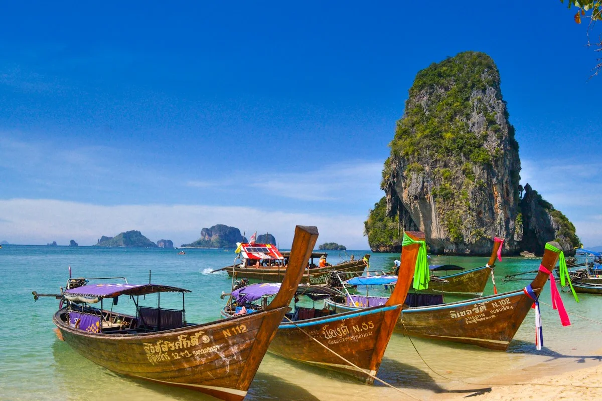

Discover Sri Lanka with expertly curated journeys by Lotus Ceylon. Enjoy seamless travel in private air-conditioned executive cars or private luxury vehicles with experienced multilingual chauffeur guides. Immerse in living culture, ancient history, untouched wildlife, and tranquil coasts as you explore iconic UNESCO sites and secret coves effortlessly.

Sri Lanka’s coast dazzles with golden beaches, turquoise waters, vibrant coral reefs, and bustling fishing villages, offering relaxation, adventure, rich culture, and breathtaking sunsets along its endless tropical shoreline.
Negombo • Tangalle • Mirissa • Galle • Bentota • Turtle Hatchery
Pigeon Island Reef • Pasikudah • Arugam Bay • Yala Safari • Sigiriya
Kalpitiya Dolphins • Mannar • Jaffna • Trincomalee • Colombo
itineraries

Best Sri Lanka Holiday Deals 2026
Early-bird discounts on curated coastal villas, luxury private transfers, and whale watching charters.

Chalo Colombo, Haalo Sri Lanka
Vibrant colonial architecture, bustling street bazaars, culinary trails, and seaside sunset dining in Colombo.
Cultural Tours
Climb Sigiriya Lion Rock fortress, marvel at Dambulla cave temples, and wander ancient ruined palaces.

Honeymoon Tours
Private plunge-pool villas, candlelight beach dinners, tea estate bungalows, and intimate coastal sunsets.

Hill Country Tours
Emerald Ceylon tea valleys, Nine Arches Bridge train rides, cascading waterfalls, and cool mountain breezes.

Golf Tours
Tee off at historic century-old golf clubs in Colombo, Nuwara Eliya hills, and scenic coastal Shangri-La greens.

Wildlife Tours
Track elusive leopards in Yala, witness elephant gatherings at Minneriya, and spot blue whales off Mirissa.

Adventure Tours
White water rafting in Kitulgala, climbing Adam’s Peak at dawn, jungle zip-lining, and deep sea sport fishing.

Ayurvedic Tours
5,000-year-old herbal therapies, Panchakarma rejuvenation, daily yoga, and organic wellness nutrition.

Family Tours
Safe family-friendly resorts, gentle turtle hatcheries, scenic train adventures, and child-safe beach bays.

Ramayana Tours
Trace epic footprints across Munneswaram, Seetha Amman Temple in Nuwara Eliya, Ravana Falls, and Ashok Vatika.
“From mist-veiled highland peaks to sacred temple citadels and turquoise coastlines — explore Ceylon through thoughtfully paced private circuits.”Lotus Ceylon Signature Journeys
Every Lotus Ceylon journey is individually tailored with dedicated private chauffeur-guides, hand-selected boutique retreats, and seamless inter-provincial transfers. Click through our signature routes on the interactive map to preview waypoint stops across Ceylon’s cultural triangle, central tea valleys, southern beaches, and untamed national parks.
Looking for a personalized route combining coastal stays and highland trails?
Essential practical advice from our local destination specialists to ensure your journey is seamless, comfortable, and culturally enriching.
Sri Lanka experiences two distinct monsoon seasons affecting opposite coasts at different times of the year. This geographical blessing means that whenever you visit, clear skies, golden beaches, and calm swimming waters are always flourishing on one side of the island.
Galle, Bentota, Mirissa, Weligama, Tangalle, Kandy, and Nuwara Eliya enjoy glorious sunshine, sapphire ocean waters, and ideal conditions for whale watching and hiking.
Trincomalee, Nilaveli, Pasikudah, Arugam Bay, and Jaffna bask in dry, radiant weather with pristine glassy seas perfect for snorkeling at Pigeon Island and world-class surfing.
Most international visitors traveling to Sri Lanka for leisure require an Electronic Travel Authorization (ETA) prior to arrival. The process is straightforward and completed entirely online.
Sri Lanka’s sacred shrines, ancient stupas, and forest hermitages are living places of unbroken daily worship. Embracing local customs demonstrates cultural respect and deepens your spiritual experience.
Sri Lanka is an extraordinary global biodiversity sanctuary. We are uncompromisingly committed to ethical, cruelty-free wildlife encounters that protect habitats, reduce disturbance, and celebrate wild animals living free.
Sri Lanka offers temperatures ranging from 32°C (90°F) on sunny coastlines to a brisk 12°C (54°F) in misty mountain tea estates. A layered, versatile wardrobe ensures effortless comfort.
Every traveler is unique. Tell us your dreams, travel dates, and preferred hotel style, and our destination specialists will craft a personalized itinerary just for you.
Have questions about visiting Sri Lanka? We’ve compiled answers to the most frequently asked questions about visas, weather, packing, currency, and local travel.
Ask Our ExpertsYou may visit Sri Lanka at any time of year. Because it is a tropical island, anticipate sunlight and beautiful skies almost all year round. Sri Lanka has two monsoon seasons: the northeast monsoon occurs from December to March, while the southwest monsoon rains extend between June and October. You can adjust your plans according to the season with our specialists' assistance.
Sri Lanka is a welcoming and secure destination, offering both safety and breathtaking landscapes. With peace across the island and growing global visitor numbers, now is the ideal time to explore. With a private chauffeur guide from Lotus Ceylon, you are accompanied every step of the way with 24/7 concierge support.
Yes, most travelers require an Electronic Travel Authorization (ETA) visa before arrival. Your passport must be valid for at least 6 months beyond the end of your trip. Visas can be applied online through the official government portal (www.eta.gov.lk).
Lightweight cotton or linen attire is best for the warm coastal climate. When heading into the central tea hills (Nuwara Eliya / Ella), temperatures dip in the evening, so pack a light cardigan or fleece. When visiting Buddhist temples and sacred shrines, your shoulders and knees must be respectfully covered.
The local currency is the Sri Lankan Rupee (LKR). Visa and MasterCard are widely accepted at hotels, restaurants, and shopping boutiques. ATMs are readily available across all major towns. We recommend carrying small cash notes for local markets and tips.
Sri Lanka is best experienced as a round-island road journey. Relying on public transport or unverified drivers can cause delays and missed experiences. Lotus Ceylon guarantees modern air-conditioned private vehicles, licensed professional English and multilingual chauffeur guides, handpicked luxury accommodation, and 24/7 on-ground assistance.